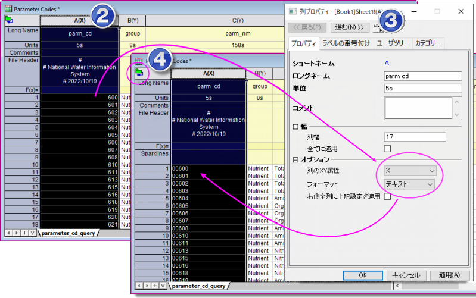

FAQ-1154 ソース ファイルでは数値のように見えるがカテゴリとして処理する必要があるExcel または ASCIIデータの列をインポートするにはどうすればよいですか?
treat-numbers-as-text-on-import
最終更新日：2022/10/20
データファイルには、カテゴリとして設定された数値コードが含まれていることがあります (例: マップまたは水質データ)。何も操作しない場合、そのようなデータはインポート時に数値として扱われ、通常は先頭のゼロが削除されます。
- 
最も簡単な解決策は以下の通りです。
- ファイルに接続し、データファイルをインポートします。
- インポートワークシートで、誤って数値として処理された列をさがし、列ヘッダを右クリックして列フォーマットを選択します。
- 列プロパティで、フォーマットをテキストに設定し、OKをクリックします。
- ワークシートの左上にある緑のコネクタアイコンをクリックし、インポートを選択します。これにより、既存のデータが再インポートされます。数値コードをテキストとして扱うため、先頭のゼロは削除されず、ワークシートの列で値が左揃えになります。
キーワード:USGS, 水質, マップ単位, マップコード, カテゴリー, テキスト